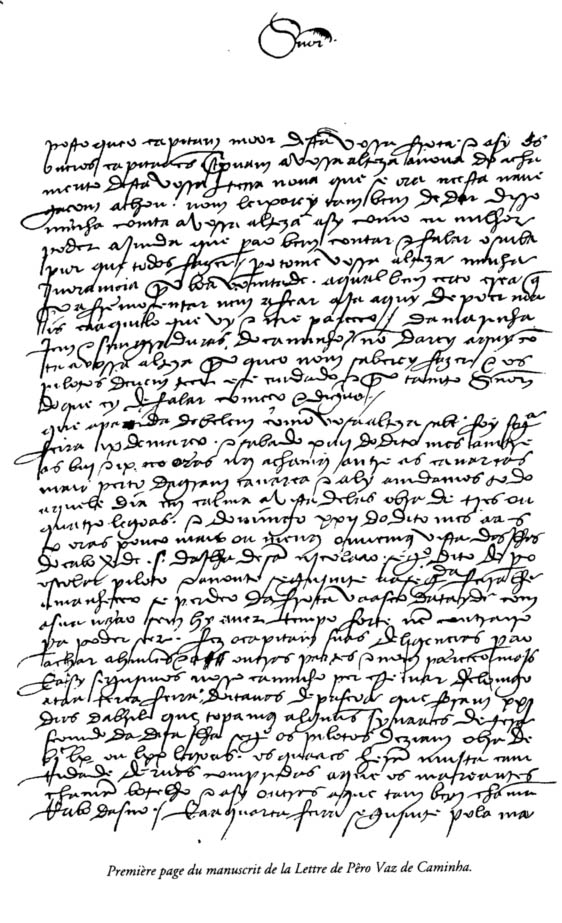

Material didático — 2º Ano do Ensino Médio
O Quinhentismo marca o início da produção escrita no Brasil, no século XVI, durante o processo de colonização portuguesa. Não se trata ainda de literatura artística propriamente dita, mas de registros históricos, cartas e textos religiosos.
Com a chegada dos portugueses em 1500, iniciou-se a necessidade de relatar à Coroa as características da nova terra. Ao mesmo tempo, missionários jesuítas passaram a produzir textos voltados à catequese indígena.
A chamada literatura de informação consistia em cartas e crônicas enviadas à Europa. O principal exemplo é a carta de Pero Vaz de Caminha.

Produzida por missionários, tinha como objetivo converter os indígenas ao catolicismo. O principal nome é o Padre José de Anchieta, que escreveu poemas, cartas e autos teatrais.
Mesmo sem intenção artística, o Quinhentismo é fundamental para compreender o início da formação cultural brasileira. Seus textos registram o primeiro olhar europeu sobre o território e os povos originários.
Seção adaptada com base no artigo explicativo da professora Louise Oliveira, publicado no portal Dicio.